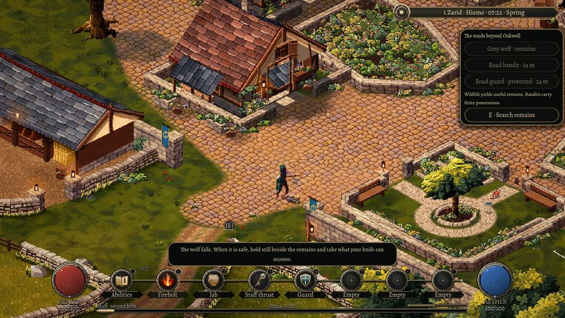
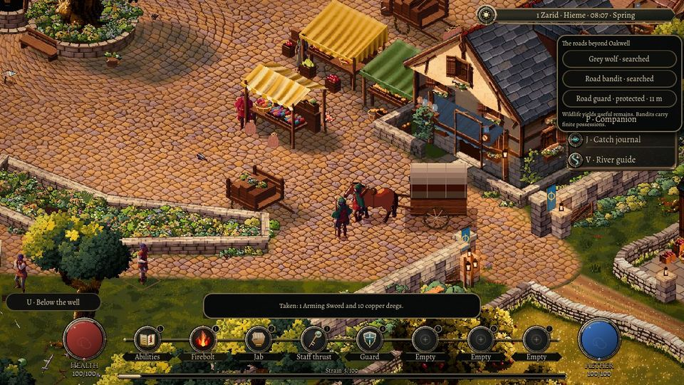
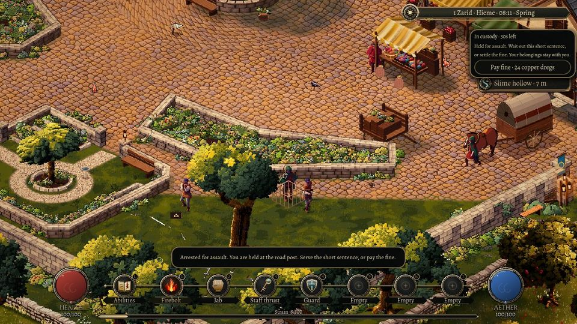

Choosing your fights
30 October 2026
A wolf has teeth, fur and meat. A bandit has whatever they brought along. A guard has the authority to make a reckless afternoon end behind bars.
This first roadside combat slice gives those encounters different outcomes in Oakwell. A wolf and an armed bandit wait on reachable ground away from the market and its working land. Both warn before striking. Their warning stays where the blow is going to land, giving you time to step aside, guard or answer with a learned ability.

What is actually there
Winning does not put a reward straight into your pocket. The body remains where it fell. When the fighting is over, take a moment beside it to recover what is useful.
Skinning the wolf uses the existing butchery rules. A more capable hand can recover better parts; time and spoilage matter. There are no coins inside a wolf. Searching the bandit recovers their carried sword and small purse. If your bag cannot hold the whole transfer, it stays on the body for later.

A different sort of opponent
The road guard starts peacefully. Walking past is safe, and aiming at the nearest hostile does not quietly select the guard. Deliberately land a blow, though, and the guard has witnessed an assault against their own person.
Running far enough can end the immediate pursuit. It does not erase the offence. Yield nearby, or lose the fight, and the guard takes you into a small holding pen. Serve the short sentence or pay the fine from money you actually possess. Your belongings, searched bodies and outstanding offence share one saved history, so returning cannot refill a purse or make the guard forget.

This begins with one wolf, one bandit and one guard. A living network of camps, witnesses, bounties and prisons is still ahead. The first aim is smaller and playable: fighting should leave you with something tangible, and choosing the wrong fight should mean something too.